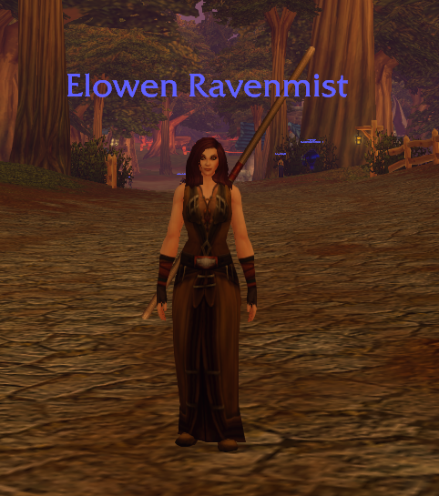
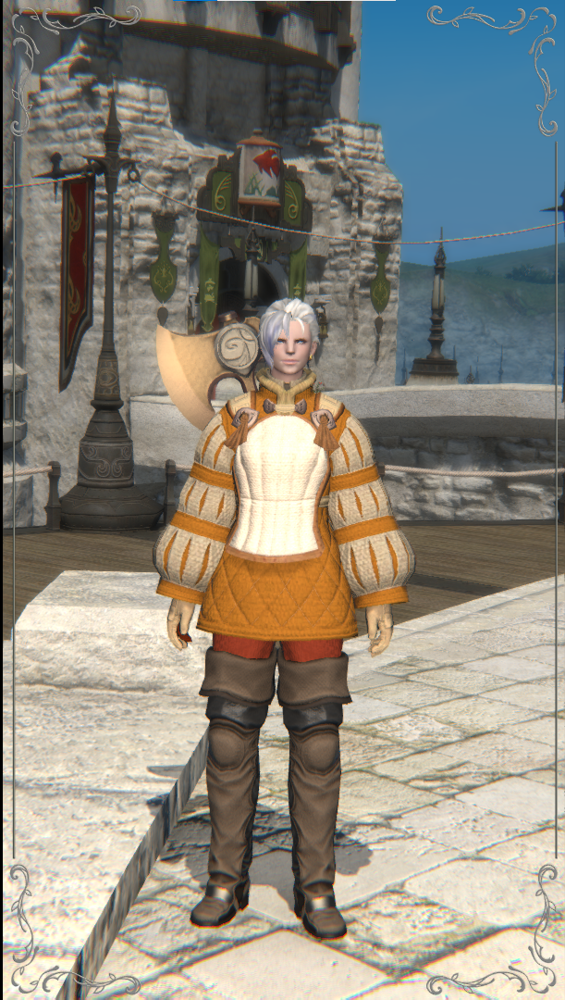

Elowen Ravenmist
Spill: World of Warcraft Forever
Rase: Human
Klasse: Mage
Elowen Ravenmist er en menneskelig magiker som har begynt sitt eventyr i Azeroth. Her vil jeg dele opplevelser og utviklingen hennes etter hvert som hun utforsker verden.

Frostulva Ravnheim
Spill: Final Fantasy XIV
Rase: Roegadyn (Hellsguard)
Klasse: Marauder (skal bli Warrior)
Håndverk: Blacksmith
Startby: Limsa Lominsa
Frostulva Ravnheim er min Roegadyn-karakter i Final Fantasy XIV. Hun kjemper med en stor øks og skal etter hvert bli Warrior. Ved siden av eventyrene lærer hun seg Blacksmith. Jeg spiller mest alene og bruker gjerne NPC-er i dungeons.
